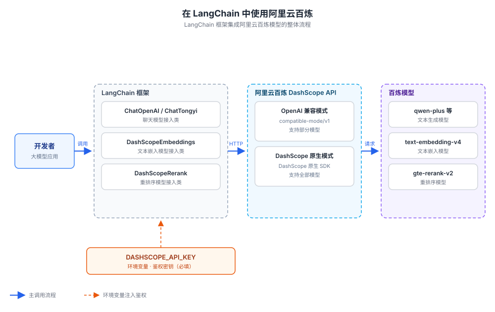
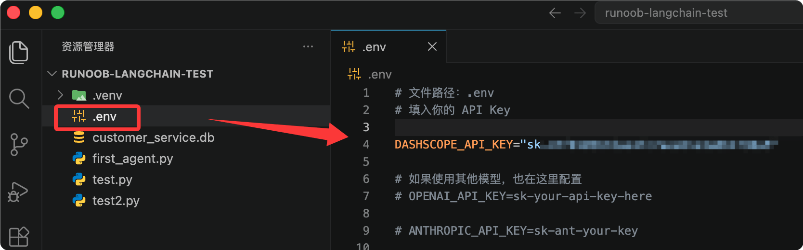

LangChain Integration with Alibaba Bailian
LangChain is currently the most popular large language model (LLM) application development framework. It helps developers quickly build prompt, model, toolchain, and agent applications through unified component interfaces.
Alibaba Cloud Bailian (DashScope) is Alibaba Cloud's LLM service platform, providing the Tongyi Qianwen (qwen) series of chat models, text embedding models, and reranker models.
This article explains how to integrate Bailian models with LangChain, covering three categories: chat models, text embedding models, and reranker models. It also provides complete examples in Python, JavaScript, and Java.
Prerequisites
We need to activate the Alibaba Cloud Bailian model service and obtain an API-KEY.
First, we can use the Alibaba Cloud main account to visit the Bailian model service platform:https://bailian.console.aliyun.com/Then click "Login" in the upper-right corner. After logging in, click the gear ⚙️ icon in the upper-right corner, select "API Key", and copy the API key. If you don't have one, you can also create an API key:


Before getting started, let's first understand two key concepts: LangChain's "Model Integration Classes" and Bailian's "Two Integration Modes".
Model Integration Classes
LangChain wraps models from different providers into unified "integration classes".
Application code programs against a unified interface. When switching providers, you only need to change the integration class and parameters; the business logic rarely needs to be changed.
Taking chat models as an example, on the Python side there are two integration classes, ChatOpenAI and ChatTongyi, corresponding to Bailian's OpenAI-compatible mode and DashScope native mode, respectively.
Two Integration Modes
Bailian provides two sets of integration protocols; different protocols correspond to different LangChain integration classes.
OpenAI-Compatible ModeThe API protocol is consistent with OpenAI. Any framework that supports the OpenAI protocol can directly connect, resulting in the lowest integration cost.
DashScope Native ModeIt uses Bailian's own DashScope protocol and can call all of Bailian's text generation models, including deployed custom models.
The overall integration architecture is shown in the following diagram:

The so-called "OpenAI-compatible interface" means that the provider's HTTP API protocol is consistent with OpenAI.
As long as the protocol is compatible, any code or tools written for OpenAI can be reused directly, with only the API endpoint needing to be changed.
Configure Environment Variables
All languages and integration methods uniformly use the environment variableDASHSCOPE_API_KEYto store the API key.
Export in the terminal on Linux / macOS:
export DASHSCOPE_API_KEY="sk-你的百炼APIKey"
Windows (CMD) setup:
set DASHSCOPE_API_KEY=sk-你的百炼APIKey
It is recommended to write the export command into the shell configuration file (e.g., ~/.bashrc, ~/.zshrc) to avoid having to set it again every time you open a terminal.
Configure via .env File (Recommended)
An even more recommended approach is to write the API key into a .env file in the project root directory and use python-dotenv to automatically load it into environment variables.
Separating the API key from the code, combined with .gitignore, prevents accidental commits and makes it easier for each person to maintain their own configuration when collaborating.
Create a .env file in the project root directory:
# 文件路径：项目根目录/.env DASHSCOPE_API_KEY=sk-你的百炼APIKey
For example, in our test projectrunoob-langchain-testcreate.envfile, and add the configuration:

Install python-dotenv:
pip install python-dotenv
Load the .env file at the beginning of your Python code:
Example
load_dotenv() # Read the .env file in the project root directory and inject it as environment variables
After loading, os.getenv("DASHSCOPE_API_KEY") in your code can read the key, which has the same effect as manually exporting it.
This loading approach has already been demonstrated in the examples in the "Chat Model" section.
The .env file is sensitive. Please add it to .gitignore (write a line ".env") to prevent the API key from being committed to the repository.
Please replace the API key in the examples with a real key, and never share it with others.
Comparison of the Two Integration Modes
First look at a comparison table, then choose the integration mode as needed.
| Comparison Item | OpenAI-Compatible Mode | DashScope Native Mode |
|---|---|---|
| Integration Principle | Reuses the OpenAI protocol integration class | Uses the DashScope native SDK |
| Supported Models | Only some models | All text generation models and deployed models |
| Python Integration Class | ChatOpenAI | ChatTongyi |
| JavaScript Integration Class | ChatOpenAI | ChatAlibabaTongyi |
| Java Integration Class | OpenAiChatModel | QwenChatModel |
| Applicable Scenarios | Existing OpenAI code needs to switch quickly | Need full model capabilities or use deployed models |
Both modes use the same domain, dashscope.aliyuncs.com. The difference lies in the path: the OpenAI-compatible mode path is /compatible-mode/v1, while the DashScope native mode path is built into the SDK.
Chat Model
Chat models are the most commonly used type of model, used for tasks such as multi-turn dialogue, Q&A, and content generation.
Below we introduce the integration methods by language. The example model uniformly uses qwen-plus, which can be replaced as needed.
Python: OpenAI-Compatible Mode
Use the ChatOpenAI integration class from the langchain_openai package to call Bailian as an OpenAI service.
First install dependencies:
pip install langchain_openai
Example code:
Example
from dotenv import load_dotenv # Read configuration from the .env file
import os
load_dotenv() # Load environment variables such as the API key from the .env file in the project root directory
# Create a chat model instance, connecting to Bailian via the OpenAI-compatible protocol
chatLLM = ChatOpenAI(
api_key=os.getenv("DASHSCOPE_API_KEY"), # Read the Bailian API Key from the environment variable (required)
base_url="https://dashscope.aliyuncs.com/compatible-mode/v1", # Bailian OpenAI-compatible API endpoint (required)
model="qwen-plus", # Model name (required), here using qwen-plus as an example
# Other optional parameters: temperature, max_tokens, etc.
)
# Construct a multi-turn conversation message list
messages = [
{"role": "system", "content": "You are a helpful assistant."}, # System message, set the assistant role
{"role": "user", "content": "Who are you?"}, # User message, the question content
]
# Make the call and return a structured response object
response = chatLLM.invoke(messages)
print(response.model_dump_json())
Output result (some fields omitted):
{
"content": "我是通义千问，由阿里云开发的大语言模型，可以回答你的问题、协助创作、提供建议等。",
"usage": { "prompt_tokens": 12, "completion_tokens": 28, "total_tokens": 40 }
}
After a successful call, an AIMessage object is returned. model_dump_json() can serialize it to JSON for easy viewing of the complete response.
Python: DashScope Native Mode
Use the ChatTongyi integration class from the langchain-community package, which uses the DashScope native protocol and supports streaming output.
ChatTongyi comes from the langchain-community package, and both this package and dashscope are no longer maintained.
For new projects, it is recommended to prefer the OpenAI-compatible ChatOpenAI integration. Only consider this approach when you need DashScope native capabilities (such as deployed models).
First install the dependencies:
pip install langchain-community dashscope
Example code:
Example
from langchain_core.messages import HumanMessage
from dotenv import load_dotenv # Read configuration from the .env file
import os
load_dotenv() # Load environment variables such as API keys from the .env file in the project root
# Create the Qwen chat model using the DashScope native protocol
chatLLM = ChatTongyi(
model="qwen-plus", # Model name (required)
dashscope_api_key=os.getenv("DASHSCOPE_API_KEY"), # Read the API Key from an environment variable (required)
streaming=True, # Enable streaming output
)
# Stream the call, receiving and printing response content chunk by chunk
res = chatLLM.stream([HumanMessage(content="hi")], streaming=True)
for r in res:
print("chat resp:", r.content)
Output result:
chat resp: 你好 chat resp: ！我是通义千问，有什么可以帮您的吗？
Streaming output lets the model return content chunk by chunk while generating, making it suitable for chat interfaces that need a typewriter effect.
Text Embedding Model
Embedding models convert text into semantic vectors, forming the foundation of applications such as RAG (Retrieval-Augmented Generation) and semantic search.
Model Selection
Bailian provides multiple versions of embedding models. You can compare their performance using the MTEB and CMTEB evaluation metrics; the larger the value, the better.
| Model | MTEB | MTEB (retrieval task) | CMTEB | CMTEB (retrieval task) |
|---|---|---|---|---|
| text-embedding-v1 | 58.30 | 45.47 | 59.84 | 56.59 |
| text-embedding-v2 | 60.13 | 49.49 | 62.17 | 62.78 |
| text-embedding-v3 (1024 dimensions) | 63.39 | 55.41 | 68.92 | 73.23 |
| text-embedding-v4 (1024 dimensions) | 68.36 | 59.30 | 70.14 | 73.98 |
When text-embedding-v3 and text-embedding-v4 are called via LangChain, you cannot specify the vector dimension; they output 1024-dimensional vectors by default.
Higher versions perform better, so prioritize v4.
Python Example
Bailian's embedding API is compatible with the OpenAI API specification. Simply use the OpenAIEmbeddings integration class from the langchain-openai package and point base_url to Bailian's compatible endpoint.
No need to install the no-longer-maintained langchain-community and dashscope packages.
First install the dependencies:
pip install langchain-openai
OpenAIEmbeddings requires three key parameters: model (embedding model name), api_key (Bailian API key), and base_url (Bailian's OpenAI-compatible endpoint).
base_url is fixed as https://dashscope.aliyuncs.com/compatible-mode/v1, which is the same as the compatible endpoint for chat models.
Example code:
Example
from dotenv import load_dotenv # Read configuration from the .env file
import os
load_dotenv() # Load environment variables such as API keys from the .env file in the project root
# Create an embedding model instance to connect to Bailian via the OpenAI-compatible protocol
# chunk_size=10: Bailian's Embedding API accepts at most 10 texts per request.
# OpenAIEmbeddings packs 1000 items at a time by default; if the knowledge base is slightly large, it will exceed the limit and report an error.
embeddings = OpenAIEmbeddings(
model="text-embedding-v4", # Embedding model name (required), using v4 as an example here
api_key=os.getenv("DASHSCOPE_API_KEY"), # Read the Bailian API Key from an environment variable (required)
base_url="https://dashscope.aliyuncs.com/compatible-mode/v1", # Bailian OpenAI-compatible endpoint (required)
check_embedding_ctx_length=False,
chunk_size=10,
)
# Vectorize a single query text
text = "This is a test document."
query_result = embeddings.embed_query(text)
print("Text vector length:", len(query_result), sep='')
# Batch vectorize multiple documents
doc_results = embeddings.embed_documents(
[
"Hi there!",
"Oh, hello!",
"What's your name?",
"My friends call me World",
"Hello World!"
])
print("Number of text vectors:", len(doc_results), ", text vector length:", len(doc_results[0]), sep='')
Output result:
文本向量长度：1024 文本向量数量：5 ，文本向量长度：1024
embed_query is used to vectorize a user query, and embed_documents is used to batch vectorize candidate documents. Only when both output vectors of the same dimension can similarity be calculated.
Reranker Model
Reranker models re-score and re-rank retrieval results, significantly improving the answer quality of RAG applications.
Model Parameters
Bailian provides the following reranker models; choose based on language, cost, and scenario:
| Model | Maximum number of documents | Maximum input per item | Language support | Unit price (per thousand tokens) | Applicable scenarios |
|---|---|---|---|---|---|
| qwen3-vl-rerank | 100 | 8,000 Token | 33 mainstream languages including Chinese, English, Japanese, Korean, etc. | Image 0.0018 yuan / text 0.0007 yuan | Image clustering, cross-modal search, image retrieval |
| qwen3-rerank | 500 | 4,000 Token | 100+ languages including Chinese, English, Spanish, French, Japanese, Korean, etc. | 0.0005 yuan | Text semantic search, RAG applications |
| gte-rerank-v2 | — | 30,000 Token | More than 50 languages including Chinese, English, Japanese, Korean, Thai, etc. | 0.0008 yuan | Long-text reranking |
Python Example
Use the DashScopeRerank integration class from the langchain-community package.
This example uses DashScopeRerank from the langchain-community package.
langchain-community and dashscope are no longer maintained. For new projects, please pay attention to the alternative integration methods provided officially by Bailian.
First install the dependencies:
pip install langchain-community dashscope
Example code:
Example
from dotenv import load_dotenv # Read configuration from the .env file
load_dotenv() # Load environment variables such as API keys from the .env file in the project root
# Simulate a list of candidate texts returned by retrieval
sequence = ["runoob is a Chinese learning website that provides programming tutorials", "text2", "text3"]
# Create a reranker model instance
reranker = DashScopeRerank(
model="gte-rerank-v2", # Reranker model name (required)
)
# Rerank the candidate texts based on the query, returning the top_n with the highest scores
print(reranker.rerank(documents=sequence, query="What is runoob", top_n=2))
The rerank method re-scores and re-ranks candidate documents based on the query, and top_n specifies the number of results to return. It is commonly used in the fine-ranking stage after RAG retrieval.
JavaScript and Java Integration
JavaScript: OpenAI-Compatible Mode
On Node.js, use the ChatOpenAI integration class from the @langchain/openai package.
First install the dependencies:
npm install @langchain/openai @langchain/core
Example code:
Example
// Create a chat model instance to connect to Bailian via the OpenAI-compatible protocol
const llm = new ChatOpenAI({
model: "qwen-plus", // Model name (required), using qwen-plus as an example here
apiKey: process.env.DASHSCOPE_API_KEY, // Read the Bailian API Key from an environment variable (required)
configuration: {
baseURL: "https://dashscope.aliyuncs.com/compatible-mode/v1", // Bailian OpenAI-compatible API endpoint (required)
},
});
// Make a chat call, returning the AI message object
const aiMsg = await llm.invoke([
{ role: "system", content: "You are a helpful assistant that translates English to French. Translate the user sentence." }, // System message
{ role: "user", content: "I love programming." }, // User message
]);
console.log('---------------------------');
console.log(aiMsg.content);
Output result:
--------------------------- J'adore la programmation.
JavaScript: DashScope Native Mode
Use the ChatAlibabaTongyi integration class from the @langchain/community package.
First install the dependencies:
Example
Example code:
Example
import { HumanMessage } from "@langchain/core/messages";
// The default model is qwen-turbo; only the API Key is needed
const qwenTurbo = new ChatAlibabaTongyi({
alibabaApiKey: process.env.DASHSCOPE_API_KEY, // Read the API Key from an environment variable (required)
});
// Use qwen-plus, and you can additionally specify generation parameters such as temperature
const qwenPlus = new ChatAlibabaTongyi({
model: "qwen-plus", // Model name (required)
temperature: 1, // Generation temperature; the larger the value, the more divergent the output
alibabaApiKey: process.env.DASHSCOPE_API_KEY, // Read the API Key from an environment variable (required)
});
const messages = [new HumanMessage("Hello")];
// Call the two models separately and print the results
const res = await qwenTurbo.invoke(messages);
const res2 = await qwenPlus.invoke(messages);
console.log('---------------------------');
console.log(res.content);
console.log('---------------------------');
console.log(res2.content);
Java: OpenAI-Compatible Mode (LangChain4j)
The Java ecosystem uses the LangChain4j framework to connect to Bailian via the langchain4j-open-ai module.
LangChain4j 1.0.0-beta3 requires Java 17 or above.
Compiling with Java 11 will report the error "Unsupported class file major version 61". Upgrading the JDK will resolve it.
Add the dependency to pom.xml:
<!-- 文件路径：pom.xml -->
<dependency>
<groupId>dev.langchain4j</groupId>
<artifactId>langchain4j-open-ai</artifactId>
<version>1.0.0-beta3</version>
</dependency>
Example code:
Example
import dev.langchain4j.data.message.UserMessage;
import dev.langchain4j.model.chat.ChatLanguageModel;
import dev.langchain4j.model.openai.OpenAiChatModel;
public class LangChainOpenAITest {
public static void main(String[] args) {
// Create a chat model, reuse OpenAI protocol to connect to Bailian
ChatLanguageModel model = OpenAiChatModel.builder()
.apiKey(System.getenv("DASHSCOPE_API_KEY")) // Read API Key from environment variable (required)
.baseUrl("https://dashscope.aliyuncs.com/compatible-mode/v1") // Bailian OpenAI-compatible address (required)
.modelName("qwen-plus") // Model name (required)
.build();
SystemMessage systemMessage = SystemMessage.from("You are a psychology expert"); // System message, set role
UserMessage userMessage = UserMessage.from("Hello"); // User message
System.out.println(model.chat(systemMessage, userMessage).aiMessage().text());
}
}
Java: DashScope Native Mode (LangChain4j)
Use the langchain4j-community-dashscope module, supports regular calls and streaming calls.
Add the dependency to pom.xml:
<!-- 文件路径：pom.xml -->
<dependency>
<groupId>dev.langchain4j</groupId>
<artifactId>langchain4j-community-dashscope</artifactId>
<version>1.0.0-beta3</version>
</dependency>
Example code (regular call and streaming call):
Example
import dev.langchain4j.community.model.dashscope.QwenStreamingChatModel;
import dev.langchain4j.data.message.ChatMessage;
import dev.langchain4j.data.message.SystemMessage;
import dev.langchain4j.data.message.UserMessage;
import dev.langchain4j.model.chat.ChatLanguageModel;
import dev.langchain4j.model.chat.StreamingChatLanguageModel;
import dev.langchain4j.model.chat.request.ChatRequest;
import dev.langchain4j.model.chat.response.ChatResponse;
import dev.langchain4j.model.chat.response.StreamingChatResponseHandler;
public class LangChainDashScopeTest {
public static void main(String[] args) {
chatLanguageModelTest(); // Regular call
// streamingChatLanguageModelTest(); // Streaming call, uncomment as needed
}
// Regular call: returns the complete result at once
public static void chatLanguageModelTest() {
ChatLanguageModel qwenModel = QwenChatModel.builder()
.apiKey(System.getenv("DASHSCOPE_API_KEY")) // Read API Key from environment variable (required)
.modelName("qwen-plus") // Model name (required)
.build();
// Build request, messages are arranged in chronological order
ChatRequest request = ChatRequest.builder()
.messages(new ChatMessage[]{
SystemMessage.from("You are a psychology expert"), // System message
UserMessage.from("Hello") // User message
})
.build();
System.out.println(qwenModel.chat(request).aiMessage().text());
}
// Streaming call: receive generated text segment by segment
public static void streamingChatLanguageModelTest() {
StreamingChatLanguageModel model = QwenStreamingChatModel.builder()
.apiKey(System.getenv("DASHSCOPE_API_KEY"))
.modelName("qwen-plus")
.build();
model.chat("Hello", new StreamingChatResponseHandler() {
@Override
public void onPartialResponse(String s) { // Callback once for each generated segment
System.out.println(s);
}
@Override
public void onCompleteResponse(ChatResponse chatResponse) { // Generation complete
System.out.println("Conversation ended");
System.exit(0);
}
@Override
public void onError(Throwable throwable) { // An exception occurred
System.out.println("An exception occurred");
System.exit(0);
}
});
}
}
LangChain4j also provides a Spring Boot Starter. You don't need to manually build model objects; just configure in application.properties.
Example
# API Key (required)
langchain4j.open-ai.chat-model.api-key=${DASHSCOPE_API_KEY}
# Model name (required)
langchain4j.open-ai.chat-model.model-name=qwen-plus
# OpenAI-compatible API address (required)
langchain4j.open-ai.chat-model.base-url=https://dashscope.aliyuncs.com/compatible-mode/v1
# Service port
server.port=9000
The DashScope native Starter configuration items have the same names. Just change the prefix to langchain4j.community.dashscope.chat-model, and there is no need to configure base-url.
Notes / Frequently Asked Questions
For issues encountered during integration, you can quickly locate them by referring to the checklist below.
Java Version Requirements
LangChain4j 1.0.0-beta3 requires Java 17 or later.
Compiling with Java 11 will report "Unsupported class file major version 61". Upgrading the JDK will solve it.
OpenAI-Compatible Mode Only Supports Some Models
The OpenAI-compatible API only supports some Bailian models. See official documentation for the full list.
If the model called is not in the supported range, switch to DashScope native mode.
Default Embedding Vector Dimensions
When calling text-embedding-v3 / v4 through LangChain, they output 1024-dimensional vectors by default, and the dimension cannot be specified manually.
When creating database tables, please reserve a 1024-dimensional vector field.
API Key Security
Do not hardcode the API Key in code; uniformly inject it through the DASHSCOPE_API_KEY environment variable.
For production environments, it is recommended to use Alibaba Cloud Key Management Service (KMS) in conjunction.
Reference Links
The following official documentation can help you understand the relevant details:
| Topic | Link |
|---|---|
| Get API Key | https://help.aliyun.com/zh/model-studio/get-api-key |
| Configure environment variables | https://help.aliyun.com/zh/model-studio/configure-api-key-through-environment-variables |
| Bailian model list | https://help.aliyun.com/zh/model-studio/getting-started/models |
| OpenAI-compatible model list | https://help.aliyun.com/zh/model-studio/compatibility-of-openai-with-dashscope |
| Python ChatOpenAI documentation | https://python.langchain.com/docs/integrations/chat/openai/ |
| Python OpenAIEmbeddings documentation | https://python.langchain.com/docs/integrations/text_embedding/openai/ |
| Python ChatTongyi documentation | https://python.langchain.com/docs/integrations/chat/tongyi/ |
| LangChain4j DashScope documentation | https://docs.langchain4j.dev/integrations/language-models/dashscope |
Click to Share Notes
<p style="font-size:14px;">Notes must be an extension of the content of this article!</p><br> <p style="font-size:12px;"><a href="../tougao.html" target="_blank">To submit an article, click here</a></p> <p style="font-size:14px;"><a href="../w3cnote/runoob-user-test-intro.html" target="_blank">How to get a registration invite code</a></p> <h3 class="text-muted"><i class="fa fa-info-circle" aria-hidden="true"></i> You must <a href=";.html" class="runoob-pop">log in</a> before sharing notes!</h3> <p><a href="../w3cnote/runoob-user-test-intro.html" target="_blank">How to get a registration invite code</a></p>